简约的品牌logo设计，往往给人耳目一新的感觉，简约并不代表简单，或者可以说是简洁，设计师在logo设计中，如何自然的将简洁的韵味表达也是需要深思熟虑，精心思考、屡次尝试后总结得出，今天这篇文章将从多个方面阐述品牌标志设计过程中，如何遵循简约原则：
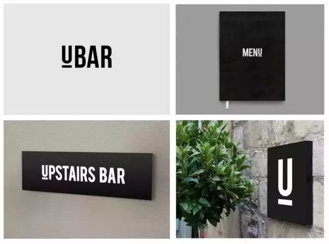
01. 保持一致
对于品牌标志来说，简约风格的商标就十分实用。就拿这个由Simon McWhinnie设计的酒吧品牌来说，标识图形及色彩采用极简风格，与其它延展元素和产品完美融合，打造出的整体感令品牌形象非常便于记忆。
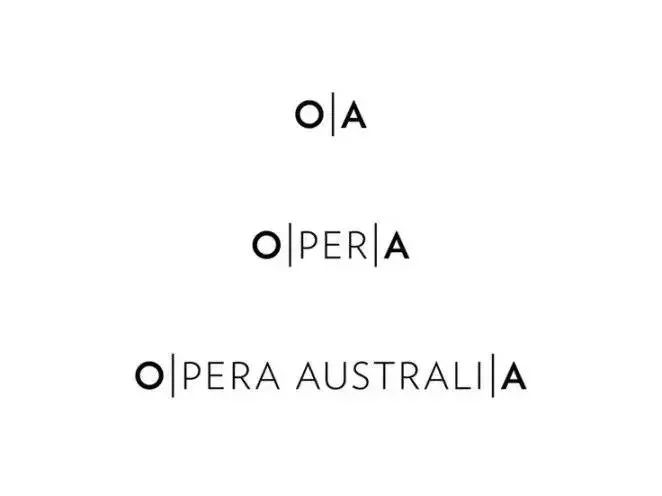
02. 寻找隐形关联
如果你认为极简主义令设计失去了创意，那你就大错特错了。其实，当你不受困于繁琐的视觉中时，才有机会巧妙发掘设计元素中的隐形关联。由Interbrand设计的Opera
Australia就是个很好的例子，他们巧妙地利用了极简主义，找到了‘OPERA’、‘OPERA AUSTRALIA’ 和 ‘OZ
OPERA’的字母中有趣的关系。
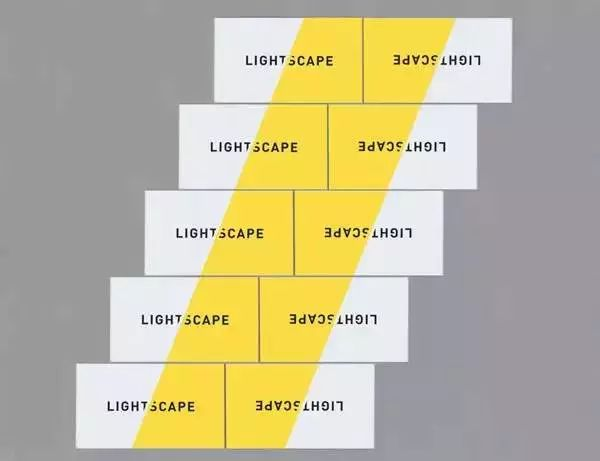
03. 运用空间关系
在极简主义中，你可以发现并利用它独有的空间感。设计可以不局限于其本身，让它与周遭元素产生关联，联合组成更“开阔”的视觉。就好比Trevor Finnegan设计的这一组名片，看看它们组合在一起时的效果。
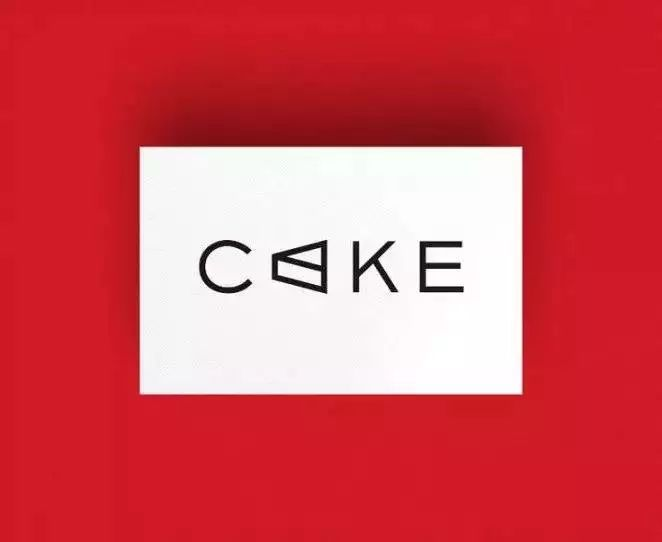
04. 脑洞大开
极简主义并不意味着摒弃所有的图形插画元素，而是对于选择什么时候在哪里用更为谨慎。如Frame Creative所设计的这款标识，图形元素巧妙地与品牌名称融合，如果能够灵活运用这种方式，便可以创造出即简约又形象的视觉。
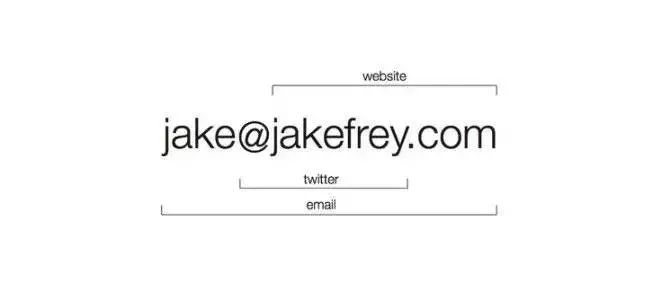
05. 注重效率
极简主义化繁为简，聚焦于沟通本身。Jake Frey所设计的这款名片就是个很好的例子，所有的信息都汇于这短短的几行字，摒弃花哨，提升效率。
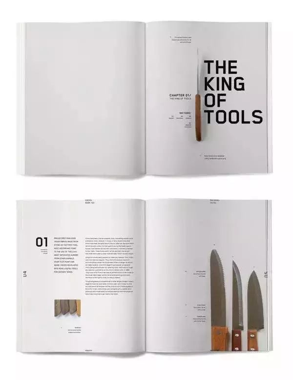
06. 网格效用
各位射鸡尸们也许都已经知道网格的用途，有些人甚至认为它对设计来说起着至关重要的作用，那么对极简主义来说，就更是如此了。既然在设计中没有过多的元素，那么是时候好好把玩一下网格系统了。来看看Jessica
Giboin的这款版面设计，精密的网格系统令文字、标题以及各个图形元素组成了清爽、简洁并极富效用的设计。
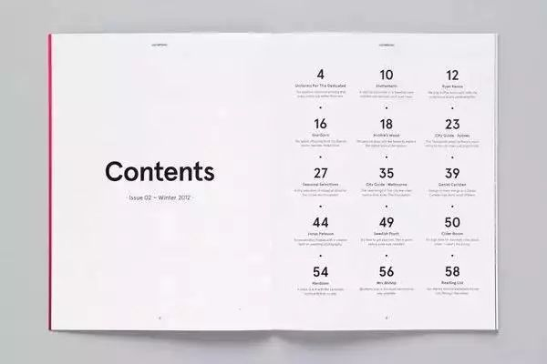
07. 重视功能性
极简主义堪称功能性冠军。一个干净、清晰、整洁的设计令视觉导航通畅无阻，所需信息一览无余，James Kape设计的这款版面就是个很好的例子。极简设计及清晰的字体分级信息都令目录页面简单易读，发挥了强大的功能性。
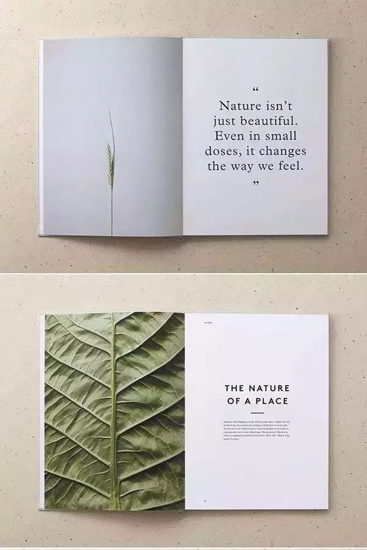
08. 探寻平衡感
版面中照片等视觉元素与文字之间的平衡感十分重要。一个好的设计需要做到没有任何一个元素在没有特定理由的情况下，在版面中占取过大份额。在Mother
Design设计的这款版面中，我们可以看到，少量强调性大文字和画面较为简洁的图片组合在一起，而材质较为复杂的图片通常与大篇幅文本结合，如此达成视觉平衡。
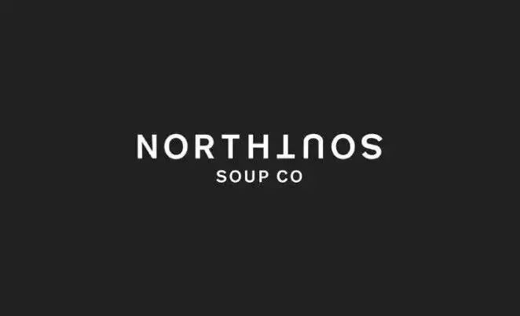
09. 打破规则
如之前所提到过，在极简主义中，你可以尝试到在其它风格中不可能实现的可能，这也就意味着，需要略微突破一下规则。就这个
Ruby
Wight所设计的LOGO字体来说，其中一半的字母都颠倒排放看起来是个不可思议的决定，放在任何其它设计风格中，这都会造成不易阅读的困扰。但是，好在这款品牌设计极度简洁，摒弃所有不必须的元素，令这貌似疯狂的想法最终倒呈现出了良好的视觉效果。
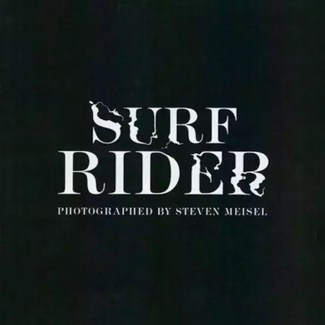
10. 字体的图形化
字体是不可忽视的重要武器，对极简主义尤为如此。它可以被用作视觉元素，根据所需状况调整其形态。譬如这个意大利Vogue中的页面，字体展现出水流波纹的视觉效果，无需多余元素，便令设计概念清晰简洁。
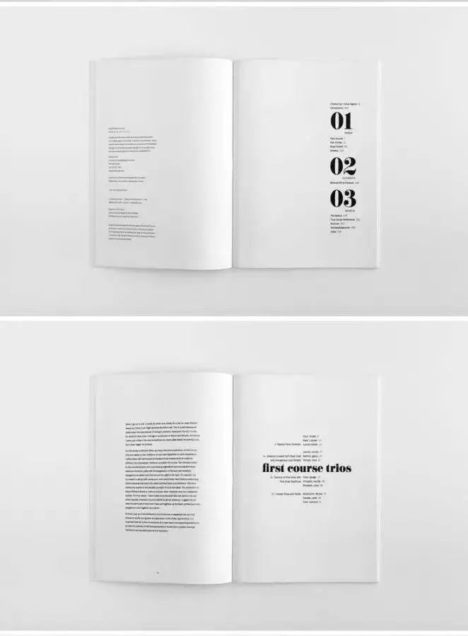
11. 妙用留白空间
留白亦被称之为“负空间”，有时候看起来只是空白而已，但是它绝不仅于此！巧妙留白可令设计平衡，避免杂乱，让画面呼吸起来。Studioahamed的此款版面设计充分使用留白，达成了高大上的极简风格。
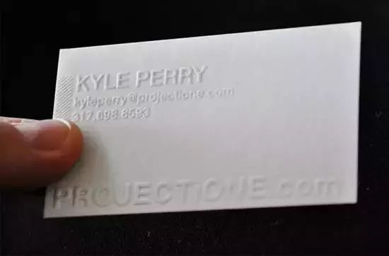
12. 挖掘可能
有什么比纯白色调更简约的呢？设计绝不止于屏幕，在印刷工艺中隐藏着各种可能，有机会让你的设计脱颖而出。凸板印刷及凹凸效果可以为极简风格设计增色不少，大家可以从 Adam Buente的设计中感受到。
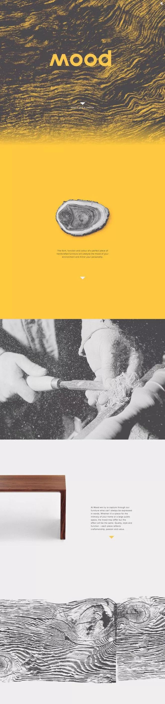
13. 关于材质
当我们在尝试极简主义时，常会只使用纯色以保画面简洁，但是极简主义并非如此。带入一些材质背景可以为设计增加深度，增强效力，同时也不会影响到风格的简约。在
Watts
Design的品牌及网站设计中，我们可以发现，其实材质图片与简洁纯色搭配特别能达成平衡感，这些简约的照片和标示组合成为极具感染力的设计。
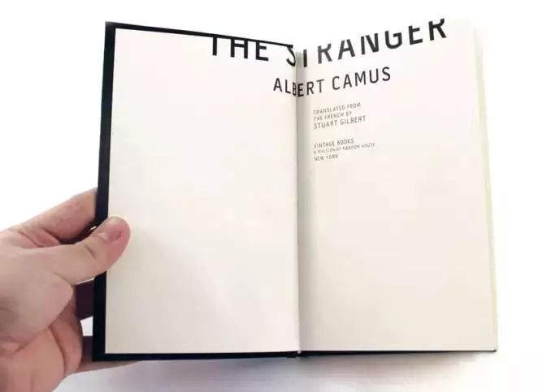
14. 跳出固定思维
毫不夸张地说，在极简主义中，你可以突破常规思维，把玩元素的位置和构图，Gregmadeit的版面设计就是个很好的例子。字母极度靠边排放，呈现出独特的效果，十分引人注目，同时，也保证了文字的可读性。
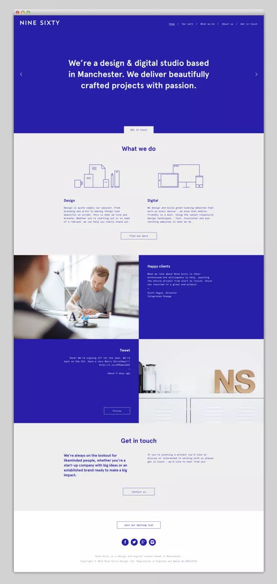
15. 直截了当
当去除了所有多余元素后，你就可以更直接地表达信息与沟通。这一特点在网站设计中尤为实用，我们总是速速浏览网页，寻找直接有效的信息。在Nine Sixty的网站案例中，读者可以在第一时间了解到他们是谁。
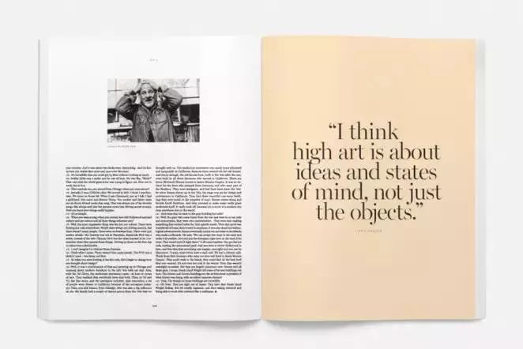
16. 放大放大
在极简主义中，你可以决定读者最先看到什么，要做到这一点的诀窍就是把控尺寸。看一下Saturdays
Magazine的这个版面，就能发现第一眼定是落在最大的元素上——右页中的大标语，而后是照片，最终是文字。在一个简约设计中，对元素尺寸的把握可以帮你决定读者的视觉阅读路线。
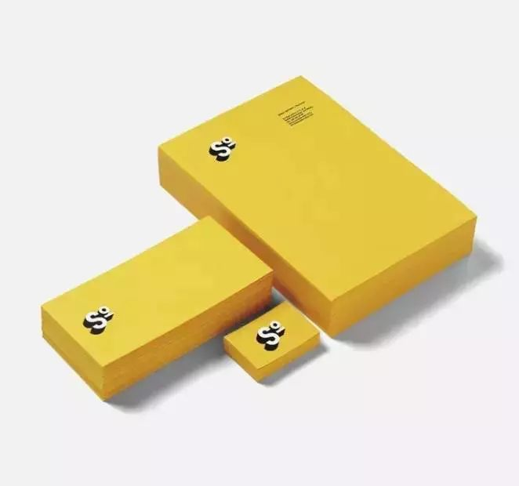
17. 不只有黑白

济南海右博纳品牌营销咨询有限公司
Copyright 2001-2019 All Rights Reserved Sivibrand.
王伟品牌顾问微信